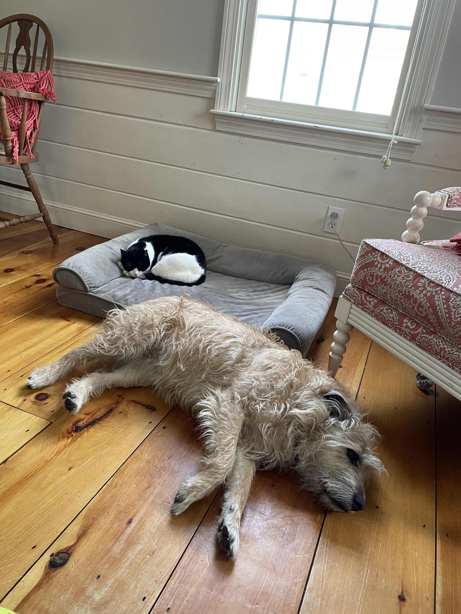
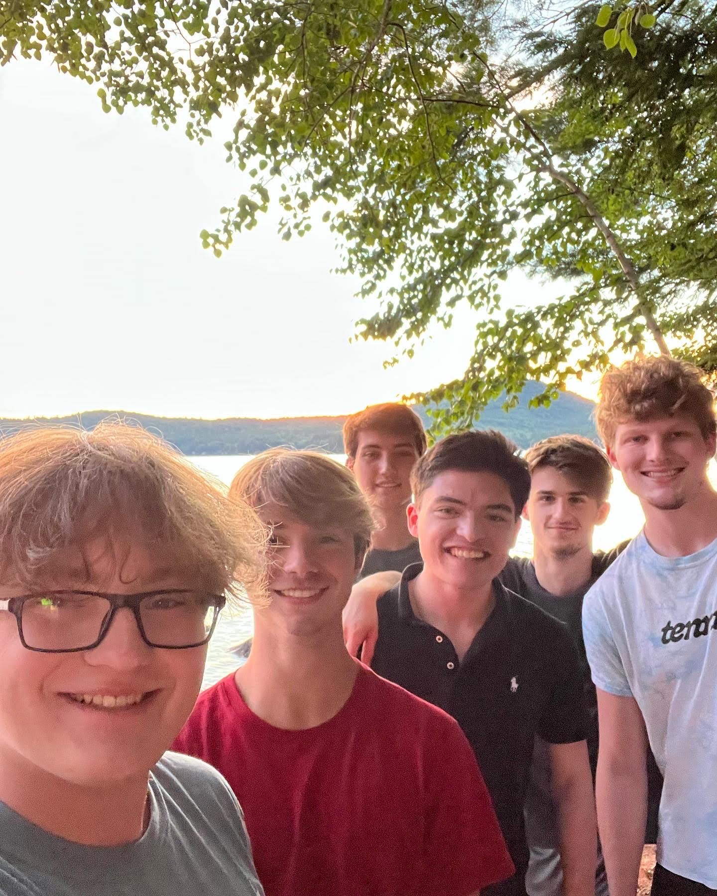
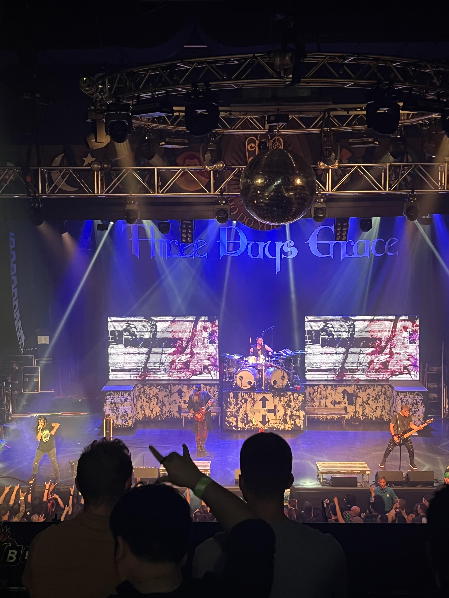

|
|
|
|
Welcome to my About me page
My name is Payton Wallace. I am 18 years old and in my freshmen year of college at URI. I lived with my parents, my twin brother, my cat, and my dog before I moved in at URI. I was born in California and moved around a lot but I ended up in New Hampshire for most of my life. I ran cross country and did nordic skiing all four years of high school and worked at chipotle for over two years.
For fun I like to play video games, watch tv and anime, hangout with my friends, cook, ski, and go to concerts. I spend a lot of time listening to music, my favorite artists are My Chemical Romance, Three Days Grace, and Fallout Boy. My most recent concert I went to was Three Days Grace in Boston. My favorite TV show is The Boys and my favorite anime is Cowboy Bebop.


